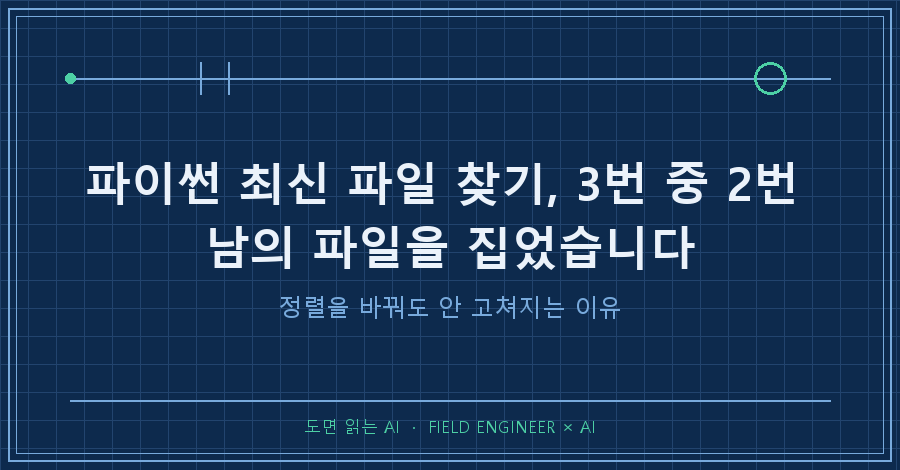
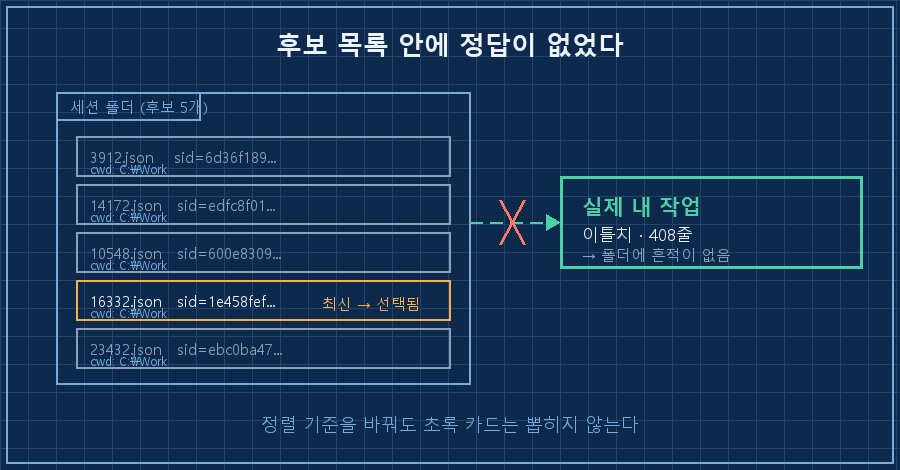
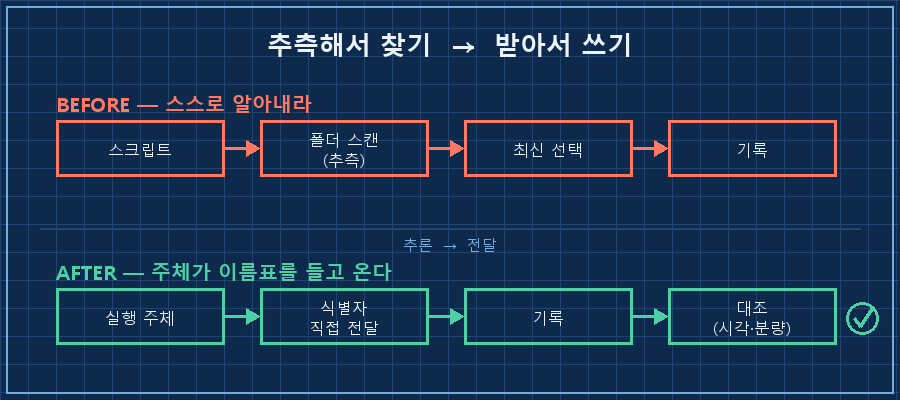
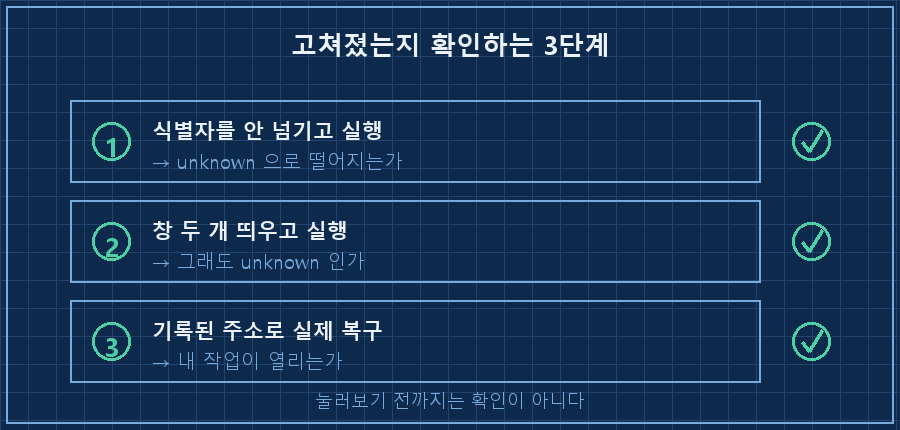

일 끝낼 때 한 줄 치면 오늘 한 작업이 파일로 떨어지는 스크립트를 굴립니다. 파이썬 최신 파일 찾기로 지금 작업 중인 세션을 알아낸 다음, 나중에 이어서 작업할 복구용 주소를 파일 맨 위에 같이 박아주는 물건이에요.
어제 그 주소를 눌렀더니 전혀 모르는 작업이 열렸습니다.
- 세션 ID: 1e458fef…
- 이어가기: (이 ID로 복구)
⚠ 자동 기록된 ID가 또 틀려서 정정함. 스크립트 기록값은 타 세션이다.
3회 실행 중 2회 오탐 (12:50 ✗ / 14:43 ✓ / 18:20 ✗)원인을 알고 나니 고칠 자리가 코드가 아니더라고요.
파이썬 최신 파일 찾기로 "지금 내 것"을 골라내는 설계는 정렬 규칙을 아무리 다듬어도 못 고칩니다. 제가 겪은 건 후보 중에서 잘못 고른 상황이 아니라, 정답이 목록에 없는 상황이었거든요. 없는 걸 고르라고 시키면 스크립트는 항상 옆에 있는 걸 집습니다.
현장에서 뭘 하나 달면 이름표부터 붙이고 시작하는 동네에서 15년 일했어요. 위치로 물건을 찾는 습관은 언젠가 반드시 사고를 낸다고 배운 사람이, 정작 제 스크립트한테는 그걸 시키고 있었네요..
2026년 9월 기준, Windows 10 + 파이썬 3.12에서 겪은 얘기입니다. 회사 일이 아니라 개인 PC에서 굴리는 기록용 스크립트예요. 폴더에서 최신 파일을 집어오는 코드가 있다면 도구는 안 가리고 같은 자리에 걸립니다.
최신 파일 찾기는 왜 틀릴까요
최신 파일은 "가장 마지막에 바뀐 파일"이지 "내가 만든 파일"이 아니기 때문입니다. 이 둘은 혼자 일할 때만 같은 말이에요.
파이썬에서 최신 파일을 찾을 때 거의 다 os.path.getmtime()을 씁니다. mtime은 그 파일의 내용이 마지막으로 바뀐 시각이에요. 파일을 시간순으로 줄 세워서 맨 뒤를 집는 거죠.
여기서 틀어지는 경우가 두 가지입니다.
하나, 옆에서 누가 같이 돌고 있을 때. 제 경우 문제의 실행 시각은 18시 20분이었는데, 엉뚱하게 기록된 그 세션은 18시 19분 52초에 시작한 놈이었어요. 28초 늦게 태어난 이웃이 "최신"이 된 겁니다.
둘, 내 파일이 애초에 그 폴더에 없을 때. 이게 진짜였고, 이 경우엔 정렬을 어떻게 바꿔도 결과가 안 변해요.

후보를 걸러냈는데 왜 전부 통과했나요
거른 조건이 제 환경에서는 아무도 못 거르는 조건이었기 때문입니다. 제 스크립트는 이렇게 생겼어요.
cwd = os.getcwd().replace("\\", "/").lower()
...
if sid and sess_cwd == cwd and mtime > latest_time:
latest_time = mtime
latest_sid = sid"작업 폴더가 지금이랑 같은 것들 중에서 최신." 처음 짤 때는 꽤 꼼꼼하다고 생각했습니다. 주석까지 달아놨더라고요. 그런데 그 폴더를 실제로 열어보니 이랬어요.
3912.json 09-15 10:13:42 cwd=C:\Work sid=6d36f189…
14172.json 09-18 14:57:27 cwd=C:\Work sid=edfc8f01…
10548.json 09-19 18:23:34 cwd=C:\Work sid=600e8309…
16332.json 09-19 18:32:03 cwd=C:\Work sid=1e458fef… ← 기록된 값
23432.json 09-19 18:36:19 cwd=C:\Work sid=ebc0ba47…후보 5개, cwd는 5개 전부 동일. 저는 늘 같은 폴더에서 일하니까요. 통과율 5/5입니다. 거름망이 아니라 그냥 뚫린 구멍이었어요.
그리고 이 목록에 제 정답 세션은 없습니다. 파일 이름이 프로세스 번호라, 프로그램이 다시 뜨면 번호가 재사용되면서 덮입니다. 그날 제 작업은 이틀에 걸쳐 이어진 긴 세션이었는데 그 흔적이 먼저 지워진 거죠.
| | 의도한 것 | 실제 동작 |
|---|---|---|
| cwd 비교 | 다른 폴더 작업 제외 | 5개 전부 통과 (항상 같은 폴더) |
| mtime 최신 | 내 세션 선택 | 28초 전 시작한 이웃 선택 |
| 후보 목록 | 정답이 들어있다고 가정 | 정답이 아예 없었음 |
"못 찾으면 unknown" 안전장치는 왜 안 걸렸나요
폴백 조건이 "후보가 0개일 때"였는데, 후보는 늘 5개였기 때문입니다.
코드 마지막 줄은 이렇게 끝납니다.
return latest_sid or "unknown" # 못 찾으면 정직하게 unknown주석까지 달아둔 안전장치였어요. 못 찾으면 모른다고 적자는 뜻이었고요. 그런데 이 장치는 후보가 하나도 없을 때만 작동합니다. 제 폴더에는 언제나 뭔가가 있었으니, latest_sid는 매번 값이 채워졌고 unknown은 단 한 번도 안 나왔습니다.
그럼 기록된 값이 맞는지 나중에라도 확인할 수 있을까요. 저도 그걸 먼저 해봤어요.
$ 기록 파일 존재 확인
c740772d… (실제 내 작업) => EXISTS
1e458fef… (기록된 값) => EXISTS둘 다 있습니다. 존재는 일치가 아니에요. 파일이 있다는 것과 그게 내 것 이라는 건 다른 얘긴데, 확인 절차는 앞쪽만 보고 통과 도장을 찍고 있었습니다.
내용까지 까보면 차이가 확 납니다. 제 실제 작업은 408줄에 이틀치, 잘못 기록된 쪽은 206줄에 15분짜리였어요. 15분짜리 옆방 기록이 이틀치 작업의 복구 주소로 박혀 있었던 겁니다.
저는 판별 규칙을 더 똑똑하게 만드는 쪽을 먼저 생각했어요. 시작 시각을 비교한다거나, 가장 오래 이어진 걸 고른다거나. 그런데 어느 규칙을 넣어도 결과가 같습니다. 정답이 목록에 없으니까요.
그래서 어떻게 고쳤나요
세 단계로 정리했어요. 순서가 중요합니다.
1단계. 주체가 자기 이름표를 들고 들어오게 합니다.
추측하지 말고 받으세요. 다행히 제 스크립트에는 넘겨받는 입구가 이미 있었습니다. 안 쓰고 있었을 뿐이에요.
# 이전: 알아서 찾아라
python session_close.py --role 기록 --summary "작업 요약"
# 이후: 내가 누군지는 내가 알려준다
python session_close.py --role 기록 --summary "작업 요약" --session-id <실행 주체가 아는 값>2단계. 자동 감지는 후보가 정확히 1개일 때만 씁니다.
2개 이상이면 고르지 말고 unknown. 폴백 조건을 "후보 없음"에서 "확정 불가"로 바꾸는 겁니다. 이 한 줄이 전부였어요.
3단계. 기록한 직후에 한 번 대조합니다.
기록된 식별자로 파일을 열어서, 마지막 활동 시각이 방금 실행 시각과 붙어 있는지 그리고 분량이 오늘 한 일과 맞는지 봅니다. 15분짜리인지 이틀치인지는 줄 수만 세도 갈려요.

제대로 고쳐졌는지 어떻게 확인하나요
판정 기준은 세 가지로 잡았어요.
1. 식별자를 안 넘기고 실행했을 때, 값이 채워지지 않고 unknown으로 떨어지는지 확인합니다. 그럴듯한 값이 나오면 아직 안 고쳐진 겁니다.
2. 일부러 창을 두 개 띄워놓고 실행해봅니다. 이 상태를 만들어야 재현돼요. 하나만 켜두고 테스트하면 3번 중 1번은 어차피 맞아서 넘어갑니다.
3. 기록된 주소로 실제 복구를 한 번 해봅니다. 확인은 눌러보는 것까지예요!

여러분 자동화에도 "폴더에서 최신 파일 하나 집어오기" 코드가 있으신가요? 혼자 돌릴 땐 몇 달이고 멀쩡합니다. 두 개가 동시에 도는 날 처음 틀어져요.
이 얘기 하면 나오는 질문들
Q. 창을 하나만 띄우면 해결되는 문제 아닌가요?
그것도 맞는데, 사람이 지켜야 할 규칙이 하나 늘어납니다. 저는 두세 개 띄우고 일하는 게 기본이라 못 지킬 규칙이었어요. 게다가 진짜 원인은 동시 실행이 아니라 정답 파일이 사라진 쪽이라, 한 개만 띄워도 그대로 틀립니다.
Q. mtime 말고 파일 생성 시각(ctime)을 쓰면 낫지 않나요?
제 상황에선 안 낫습니다. 어떤 시각을 쓰든 후보 목록 안에서 고르는 건 똑같으니까요. 파이썬 최신 파일 찾기의 정렬 기준을 손보는 건 답이 아니었어요. 참고로 ctime은 윈도우와 리눅스에서 뜻이 다른 것도 조심할 부분입니다.
Q. AI한테 시킨 코드라 그런 거 아닌가요?
이 함수는 AI가 두 번이나 고친 자리입니다. 주석에 이력까지 남아 있어요. 다른 폴더 것이 섞인다고 해서 cwd 비교를 넣었고, 파일명이 복구에 못 쓰는 값이라고 해서 내부 값을 읽도록 또 고쳤고요. 고칠 때마다 "찾아내는 규칙"은 촘촘해졌는데, 찾아낸다는 전제를 의심한 적은 없었습니다. 시킨 저나 받은 AI나 같은 방향만 봤던 거죠.
식별자는 찾는 게 아니라 받는 거더라고요. 현장에서 이름표 붙이는 게 왜 규칙인지 15년 만에 다시 배웠습니다..
다음 글에서는 자동화가 남긴 기록을 믿어도 되는지, 제가 어떤 순서로 되짚는지 정리해볼게요.
이번처럼 고치는 대신 통째로 접은 설계들은 makefield.ai에 "왜 버렸는지"까지 남겨둡니다.
태그: #파이썬최신파일찾기 #mtime정렬 #파이썬파일정렬 #자동기록오류 #로그오기록 #파이썬자동화 #자동화설계 #AI작업기록 #AI에게일시키기 #AI자동화구축 #개인AI에이전트 #스크립트디버깅 #식별자관리 #자동화검증 #도면읽는AI